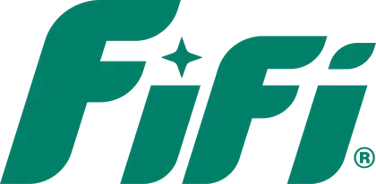
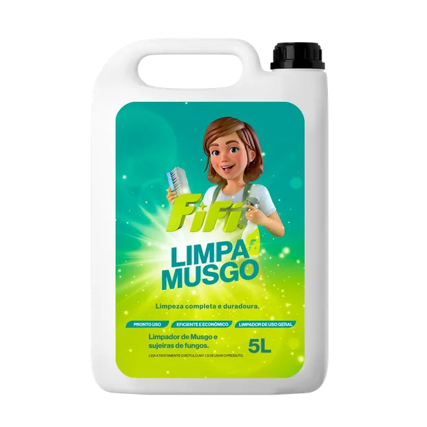
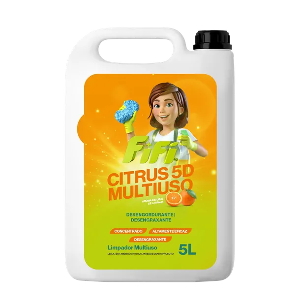
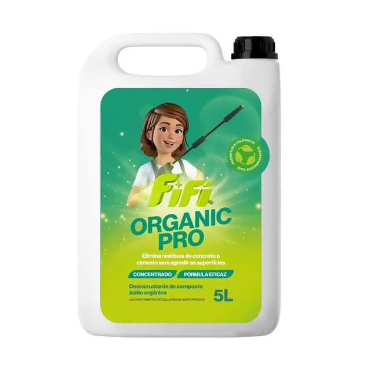
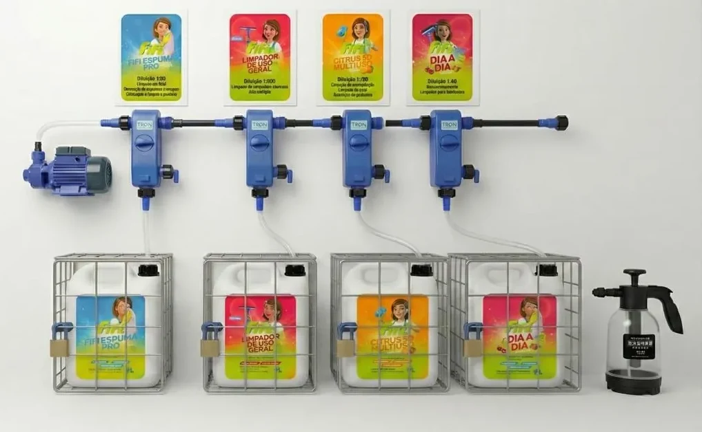
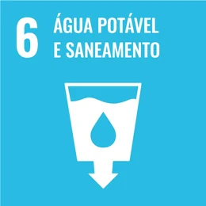
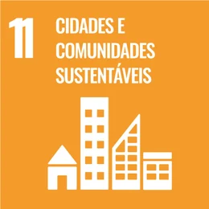
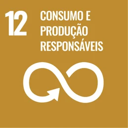
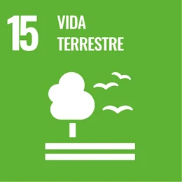

Solução completa
Mão de obra qualificada, supervisão ativa, produtos profissionais e consultoria técnica de diagnóstico.

Profissional Quero um orçamentoFifi para empresas
O maior custo não está no produto, está no desperdício. Concentrados, sistema de diluição instalado e equipe treinada: o consumo para de variar de turno para turno e o custo vira previsível.



Operações que já usam e aprovam
Linha profissional
Produtos biodegradáveis para diferentes níveis de sujidade, superfícies e protocolos. A combinação é definida no diagnóstico.
Processo validado
Instalamos um dosador para cada produto na sua operação, ligado direto ao galão concentrado. A equipe não mede nada no olho: encosta o borrifador, o produto sai já diluído na medida certa e cada área usa o seu, identificado na parede. É isso que faz o consumo parar de variar de turno para turno.

Uso excessivo de produtos
Falta de padrão na diluição
Desperdício invisível no dia a dia
Produtos agressivos que danificam superfícies
Alto custo mensal com reposição
Mapeamos os produtos certos para cada área.
Montamos o aparelho de diluição na operação.
Qualificamos a equipe interna para a aplicação correta.
Medimos a implementação e identificamos o consumo real.
Supervisão contínua, não só entrega de galão.
O consumo vira previsível e planejável.
Mão de obra qualificada, supervisão ativa, produtos profissionais e consultoria técnica de diagnóstico.
Tabela CNPJ com preço diferenciado e produto concentrado que praticamente elimina o enxágue.
Sem exposição direta ao químico: menos alergia, reação e problema respiratório na equipe.
Descarte correto, evitando penalização por lançamento químico direto no ambiente.
Qualificação da mão de obra interna para aplicação correta de produto e técnica.
ESG
Produtos biodegradáveis, diluição controlada e menos embalagem em circulação. A linha contribui diretamente com os Objetivos de Desenvolvimento Sustentável da ONU.




Comece pelo diagnóstico
Um consultor FIFI levanta áreas, rotina e consumo atual, e devolve a solução recomendada com a tabela CNPJ.